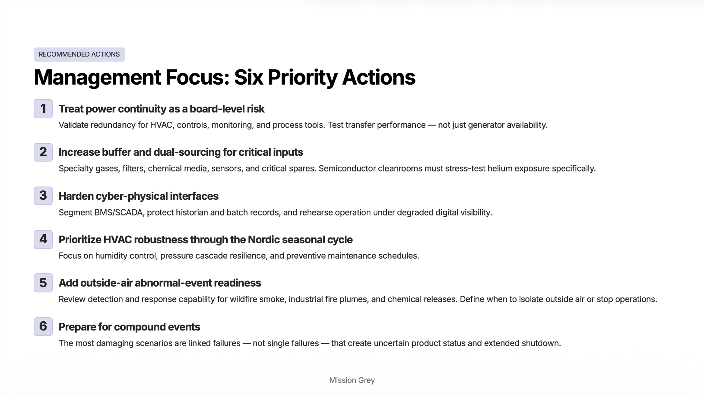
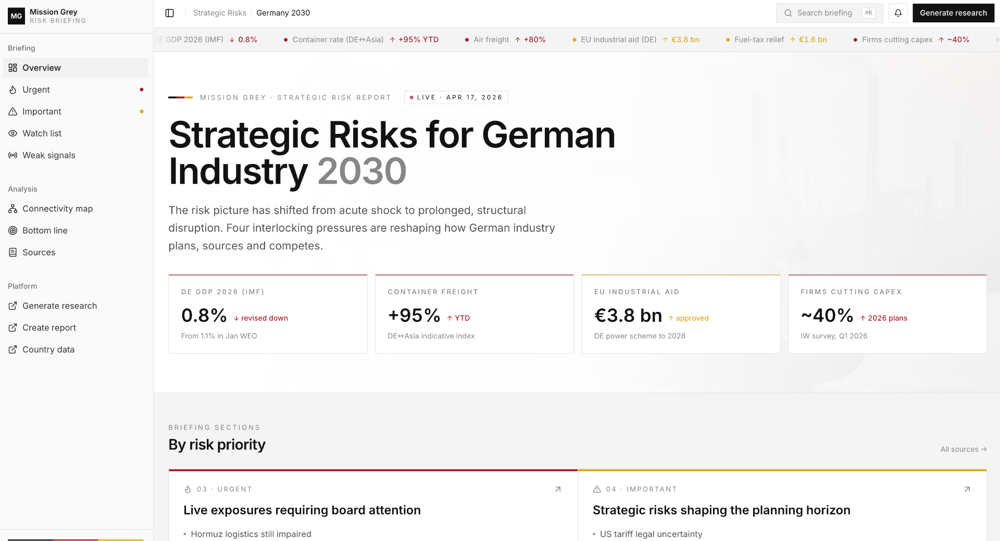

The platform · Access by request
The layer between the world and your decisions.
Mission Grey turns external signals, across geopolitics, markets, regulation, and supply chains, into structured intelligence a real business decision can rest on. This page walks the instrument set, screen by screen.
The structured process
Signals
External events, data, and weak signals, collected across markets, regulation, and supply chains.
Scenarios
Structured analysis that connects those signals into possible outcomes and business impact.
Decisions
Clear, actionable inputs for strategy, risk management, and operations.
Capability walk
Seven capabilities, one platform
What the platform does, screen by screen.
The order below follows the work: watch the world, read what it means for you, test the option, and leave with something a board can act on. Every screen is the product itself, unretouched.
01 · MONITOR
Track the world in real time.
Geopolitical events, military movements, maritime chokepoints, and supply chain signals, monitored across the world in real time. Live signals are followed across geographies, sectors, and risk categories, so the watch never depends on somebody happening to read the right headline.
INPUT THE WORLDOUTPUT SIGNAL

02 · ANALYZE
See how a signal affects your business.
Analysis translates external developments into strategic implications for your organization, with geopolitical and regulatory signals mapped directly to your operations. The work happens in a session you can reopen, question, and extend, and every report it generates carries its sources.
INPUT SIGNALOUTPUT IMPLICATION

03 · SIMULATE
From signals to decisions.
Multi‑actor simulation models complex geopolitical and market scenarios and stress‑tests your strategy against the way those actors actually behave. Developments turn into concrete moves: adjust exposure, secure supply chains, reprice risk.
INPUT SIGNALOUTPUT SCENARIO


04 · CONNECT
Understand systemic dependencies
Navigate the relationships between entities, events, and signals. The graph shows how risk travels across regions and sectors before it reaches you.

05 · MODEL
Model how scenarios unfold
Quantitative branch analysis runs forward‑looking economic models, so every scenario carries a path over time against a baseline you can inspect.
06 · ACT
Act on what matters.
Expert analysis reports and context‑specific recommended actions, prioritized for your organization and written for the room where the decision gets made. Delivered in a format ready for management or board discussion, as exports, as shareable report microsites, or through the API into your own systems.
INPUT SCENARIOOUTPUT ACTION

07 · BUILD
Build intelligence applications in minutes.
Create interactive dashboards and decision environments tailored to your needs, combine external intelligence with your internal data, and deploy them without heavy integration work. This replaces months of system integration with intelligence applications that are usable immediately.
INPUT INTELLIGENCEOUTPUT APPLICATION

Trust architecture
Built for trust and accountability.
Mission Grey is designed for real decisions, not just analysis. Every signal, interpretation, and recommendation is transparent, traceable, and explainable.
Traceable to source
Every signal and input can be linked back to its origin.
Explainable in context
Decisions are based on clear reasoning, not opaque models.
Reviewable by experts
Outputs can be validated through the Mission Grey Guild.
Audit‑ready
Decisions can be documented and justified.
Reports include sources and can be verified, a feature users consistently highlight, and the whole design assumes environments that require transparency, auditability, and accountability.
Hybrid intelligence
Machine scale, human judgment
Machine‑scale detection, with expert judgment inside the system.
AI identifies patterns. Experts provide context, judgment, and validation. Continuous detection runs at machine scale across global signals, and where context decides the answer, the Mission Grey Guild validates and challenges the output. Experts are integrated into the system, not added on top of it.
- AI models
- Continuous detection across global signals.
- Data science
- Modeling impact and how scenarios unfold.
- The Guild
- A curated network of experts in geopolitics, regulation, finance, and technology.
Research partners
Cambridge Judge Business School · Aalto University · Tampere University
Independent validation
Rated 5.0 / 5 by users on G2.
Mission Grey is reviewed by users on G2, a leading software review platform.
From G2 reviews “Not just data, but actually quality reports” “Everything you need at your fingertips” View reviews on G2
Access
See what you are currently missing.
Some decisions depend on what others miss. Mission Grey is an enterprise platform; access is by request.